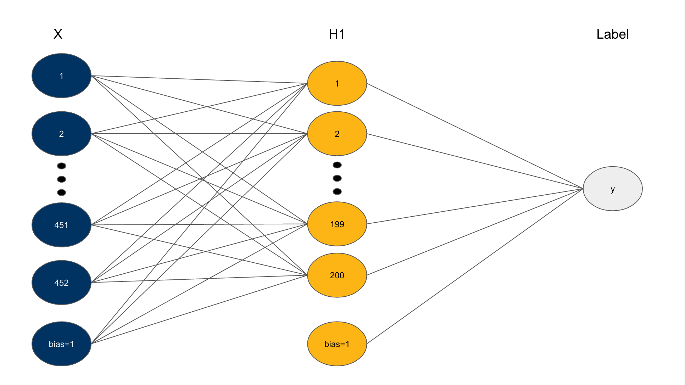

Hardware
Xbox Kinects
The Xbox kinects are set up so that they can generate a point cloud from opposite ends of an object. Because of their high bandwidth output, a single usb controller cannot handle the output of two kinects. With this in mind, we must use usb ports which use different controllers. This translates to using usb ports farthest from each other on the computer.
Once the kinks were figured out, we used the ros package freenect_launch to interface with the kinects and publish point cloud data. The majority of the time was spent on figuring out this interface, but afterwards, we were able to move quickly when implementing the rest of the software.
To the right is a picture of our experimental setup with Baxter, and AR Tag, and two XBox Kinects.
Software
ROS Packages
These are the packages that made it possible for us to create our grasping system.
We use ar_track_alvar as a way to calibrate the cameras and discover the location of the kinects relative to Baxter's base frame. We used an AR Tag like the one below.
For manipulating Baxter, we used the MoveIt! API, which was a quick way to generate motion plans. However, because we were using the RRT algorithm implemented by MoveIt!, there were some cases where a motion plan could not be found.
Neural Networks
We use python and the numpy module to featurize our grasps and build our neural network. This neural network architecture was inspired by the one used in our machine learning course. We use a logistic loss function and a hyperbolic tangent activation function in the hidden layer and a sigmoid activation function for the output layer.
